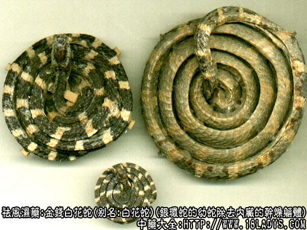

别名：白花蛇。
来源：为脊椎动物门眼镜蛇科爬行动物银环蛇的幼蛇除去内脏的干燥躯体。有野生也有养殖。
产地：主产于广东。
性状鉴别：蛇体细小，均盘成圆盘形，头在中央，尾娜口内，状如古代铜钱大小，故名“金钱白花蛇”。蛇头略粗于体，长方圆形，黑褐色。背部有一条隆起的脊棱。周身由黑褐色的和白色细密鳞片组成的环节带，黑褐色的节带较宽，两色节带各45～60节。腹部灰白色或黄白色，黑褐色的节带颜色浅淡。气微腥，味微咸（近年其成蛇亦同等入药）。
以头尾齐全，色泽明亮，习惯认为盘径3～4厘米者为佳。
主要成分：干的蛇体、含蛋白质、脂肪。及氨基酸。
药理作用：祛风湿、通经络。实验证明，白花蛇的提出物有镇静、镇痛作用；并能直接扩张血管而降血压。
炮制：原品生用。
性味：甘、咸、温。头部有毒。
归经：入肝经。
功能：祛风湿，镇痉，攻毒。
主治：风湿关节酸痛，四肢筋脉拘急，半身不遂，口眼歪斜，疥瘌，梅毒恶疮，破伤风等症。
临床应用：1、治风湿关节痛（不论新久），手足萎弱，屈伸不便，常配羌活、防风、秦艽等浸酒，方如白花蛇酒。
使用注意：阴虚内热者不宜服，类中风而属虚者也不宜服。
用量：3～4.5g，或研末吞服，或制丸，亦可入煎剂。
处方举例：白花蛇酒：蕲蛇（干）90g、羌活、防风、秦艽、当归、五加皮各30g、天麻20g，浸入1.5～2.5kg斤烧酒内，浸一个月左右可服，每晚饭后服15～60g。
注：1、银环蛇为有毒蛇，头部有毒腺，含有强烈的神经性毒，并含有溶血成分及血球凝集成分。不含出血性毒。被它咬伤中毒后，常麻痹而死。
2、本品在使用时，有的地区去头尾，使用不含毒的身躯部位，据知只含有蛋白质、脂肪质及微量的皂甙。有的地区则使用全体不去头尾，必含有不定量的蛇毒。蛇毒经服用后，在人体内起什么作用，还待深入研究。